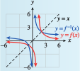
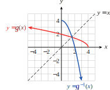
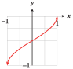
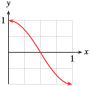

Section 5.1 Inverse Functions
¶Subsection 5.1.1 Introduction
When you buy a house, your monthly mortgage payment is a function of the size of the loan. The table shows mortgage payments on \(30\)-year loans of various sizes at \(6\)% interest.
| Loan amount, \(L\) | \(150,000\) | \(175,000\) | \(200,000\) | \(225,000\) | \(250,000\) |
| Mortgage payment, \(M\) | \(899.33\) | \(1049.21\) | \(1199.10\) | \(1348.99\) | \(1498.88\) |
For the function \(M = f (L)\text{,}\) the input value is the amount of the loan, and the output is the mortgage payment.
However, when you are shopping for a house, you may think of the mortgage payment as the input variable: If you can afford a certain monthly mortgage payment, how large a loan can you finance? Now the mortgage payment is the input value, and the loan amount is the output. By interchanging the inputs and outputs, we define a new function, \(L = g(M)\text{,}\) shown below.
| Mortgage payment, \(M\) | \(899.33\) | \(1049.21\) | \(1199.10\) | \(1348.99\) | \(1498.88\) |
| Loan amount, \(L\) | \(150,000\) | \(175,000\) | \(200,000\) | \(225,000\) | \(250,000\) |
This new function gives the same information as the original function, \(f\text{,}\) but from a different point of view. We call the function \(g\) the inverse function for \(f\text{.}\)
The elements of the range of \(f\) are used as the input values for \(g\text{,}\) and the output values of \(g\) are the corresponding domain elements of \(f\text{.}\) For example, from the tables you can verify that \(f (200,000) = 1199.10\text{,}\) and \(g(1199.10) = 200,000\text{.}\) In fact, this property defines the inverse function.
Inverse Functions.
Suppose \(g\) is the inverse function for \(f\text{.}\) Then
We can also use composition notation (see Subsection 1.2.8) to define inverse functions. Suppose \(g\) is the inverse function for \(f\text{.}\) Then,
Example 5.1.1.
Suppose \(g\) is the inverse function for \(f\text{,}\) and we know the following function values for \(f\text{:}\)
Find \(g(5)\) and \(g(0)\text{.}\)
We know that \(g(5) = -3\) because \(f (-3) = 5\text{,}\) and \(g(0) = 5\) because \(f (5) = 0\text{.}\) Tables may be helpful in visualizing the two functions, as shown below.
| \(y=f(x)\) | |
| \(x\) | \(y\) |
| \(-3\) | \(5\) |
| \(2\) | \(1\) |
| \(5\) | \(0\) |
\(\blert{~~~~~~\text{→ Interchange the columns →}}\)
| \(x=g(y)\) | |
| \(y\) | \(x\) |
| \(5\) | \(-3\) |
| \(1\) | \(2\) |
| \(0\) | \(5\) |
For the function \(f\text{,}\) the input variable is \(x\) and the output variable is \(y\text{.}\) For the inverse function \(g\text{,}\) the roles of the variables are interchanged: \(y\) is now the input and \(x\) is the output.
Checkpoint 5.1.2.
Suppose \(g\) is the inverse function for \(f\text{,}\) and suppose we know the following function values for f :
Find \(g(0)\) and \(g(1)\text{.}\)
\(g(0) = -1\text{,}\) \(~g(1) = 0\)
Subsection 5.1.2 Finding a Formula for the Inverse Function
If a function is given by a table of values, we can interchange the columns (or rows) of the table to obtain the inverse function. Swapping the columns works because we are really interchanging the input and output variables. If a function is defined by an equation, we can find a formula for its inverse function in the same way: Interchange the roles of the variables in the equation so that the old output variable becomes the new input variable.
Example 5.1.3.
- The function \(H = f (t) = 6 + 2t\) gives the height of corn seedlings, in inches, \(t\) days after they are planted. Find a formula for the inverse function and explain its meaning in this context.
- Make a table of values for \(f (t)\) and a table for its inverse function.
-
Write the equation for \(f\) in the form
\begin{equation*} H = 6 + 2t \end{equation*}In this equation, \(t\) is the input and \(H\) is the output. We interchange the roles of the variables by solving for \(t\) to obtain
\begin{equation*} t = \frac{H - 6}{2} \end{equation*}In this equation, \(H\) is the input and \(t\) is the output. The formula for the inverse function is
\begin{equation*} t=g(H) = \dfrac{H - 6}{2} \end{equation*}The function \(g\) gives the number of days it will take the corn seedlings to grow to a height of \(H\) inches.
-
To make a table for \(f\text{,}\) we choose values for \(t\) and evaluate \(f (t) = 6 + 2t\) at those \(t\)-values, as shown at left below.
\(H=f(t)\) \(t\) \(H\) \(0\) \(6\) \(1\) \(8\) \(2\) \(10\) \(3\) \(12\) \(t=g(H)\) \(H\) \(t\) \(6\) \(0\) \(8\) \(1\) \(10\) \(2\) \(12\) \(3\) To make a table for \(g\text{,}\) we could choose values for \(H\) and evaluate \(\dfrac{H-6}{2}\text{,}\) but because \(g\) is the inverse function for \(f\text{,}\) we can simply interchange the columns in our table for \(f\text{,}\) as shown at right above.
You can check that the values in the second table do satisfy the formula for the inverse function, \(g(H)=\dfrac{H-6}{2}\text{.}\)
Note 5.1.4.
Note once again that the two tables show the same relationship between \(t\) and \(H\text{,}\) but the roles of input and output have been interchanged. The function \(f\) tells us the height of the seedlings after \(t\) days, and \(g\) tells us how long it will take the seedlings to grow to height \(H\text{.}\)
Checkpoint 5.1.5.
Carol can burn \(600\) calories per hour bicycling and \(400\) calories per hour swimming. She would like to lose \(5\) pounds, which is equivalent to \(16,000\) calories.
- Write an equation relating the number of hours of cycling, \(x\text{,}\) and the number of hours swimming, \(y\text{,}\) that Carol must spend to lose \(5\) pounds.
- Write \(y\) as a function of \(x\text{,}\) \(y = f (x)\text{.}\) What does \(f (10)\) tell you?
- Find the inverse function, \(x = g(y)\text{.}\) What does \(g(10)\) tell you?
\(600x + 400y = 16,000\)
\(y = f (x) = 40 - 1.5x\text{;}\) \(f (10) = 25\text{;}\) If Carol cycles for \(10\) hrs, she must swim for \(25\) hrs.
\(x = g(y) = 26\frac{2}{3} - \frac{2}{3} y\text{;}\) \(g(10) = 20\text{;}\) If Carol swims for \(10\) hrs, she must cycle for \(20\) hrs.
Subsection 5.1.3 Inverse Function Notation
If the inverse of a function \(f\) is also a function, we denote the inverse by the symbol \(f^{-1}\text{,}\) read "\(f\) inverse." This notation makes it clear that the two functions are related in a special way. For example, the function \(f (t) = 6 + 2t\) in Example 5.1.3 has inverse function \(f^{-1}(H) = \dfrac{H -6}{2}\text{.}\)
Example 5.1.6.
If \(~~y = f (x) = x^3 + 2,~~\) find \(~~f^{-1}(10)\text{.}\)
We first find the inverse function for \(y = x^3 + 2\) by solving for \(x\text{:}\)
The inverse function is \(x = f^{-1}(y) = \sqrt[3]{y - 2}\text{.}\) Now we evaluate the inverse function at \(y = 10\text{:}\)
Caution 5.1.7.
Although the same symbol, \(^{-1}\text{,}\) is used for both reciprocals and inverse functions, the two notions are not equivalent. That is, the inverse of a given function is usually not the same as the reciprocal of that function. In Example 5.1.3, note that \(f^{-1}(y)\) is not the same as the reciprocal of \(f (y)\text{,}\) because
To avoid confusion, we use the notation \(\dfrac{1}{f}\) to refer to the reciprocal of the function \(f\text{.}\)
Note 5.1.8.
In Example 5.1.3, you can check that \(f(2) = 10\text{.}\) In fact, the two statements
are equivalent; they convey the same information. This fact is a restatement of our earlier observation about inverse functions, this time using inverse function notation.
Inverse Functions.
Suppose the inverse of \(f\) is a function, denoted by \(f^{-1}\text{.}\) Then
Checkpoint 5.1.9.
- If \(~~z = f (w) = \dfrac{1}{w + 3}~~\text{,}\) find \(~~f^{-1}(1)\text{.}\)
- Write two equations about the value of \(f^{-1}(1)\text{,}\) one using \(f^{-1}\) and one using \(f\text{.}\)
- Show that \(f^{-1}(1)\) is not equal to \(\dfrac{1}{f(1)}\text{.}\)
\(-2\)
\(f^{-1}(1) = -2\text{,}\) \(f (-2) = 1\)
\(f^{-1}(1) = -2\text{,}\) but \(\dfrac{1}{f (1)}= 4\)
We can use a graph of a function \(y = f (x)\) to find values of the inverse function \(x = f^{-1}(y)\text{.}\) The figure below shows the graph of \(f(x) = x^3 + 2\text{.}\)
You already know how to evaluate a function from its graph: We start with the horizontal axis. For instance, to evaluate \(f(-2)\text{,}\) we find \(-2\) on the \(x\)-axis, move vertically to the point on the graph with \(x = -2\text{,}\) in this case \((-2, -6)\text{,}\) and read the \(y\)-coordinate of the point. We see that \(f(-2) = -6\text{.}\)
To evaluate the inverse function, we start with the vertical axis. For example, to find \(f^{-1}(10)\text{,}\) we find \(10\) on the vertical axis and move horizontally to the point on the graph with \(y = 10\text{.}\) In this case, the point is \((2, 10)\text{,}\) so \(f^{-1}(10) = 2\text{.}\)

Example 5.1.10.
The function \(C = h(F)\) gives Celsius temperature as a function of Fahrenheit temperature. The graph of the function is shown below. Use the graph to evaluate \(h(68)\) and \(h^{-1}(10)\text{,}\) and then explain their meaning in this context.

To evaluate \(h(68)\text{,}\) we find the input \(F = 68\) on the horizontal axis, then find the point on the graph with \(F = 68\) and read its vertical coordinate. We see that the point \((68, 20)\) lies on the graph, so \(h(68) = 20\text{.}\) When the Fahrenheit temperature is \(68\degree\text{,}\) the Celsius temperature is \(20\degree\text{.}\)
The inverse function reverses the roles of input and output. Because \(C = h(F)\text{,}\) \(F = h^{-1}(C)\text{,}\) so the inverse function gives us the Fahrenheit temperature if we know the Celsius temperature. In particular, \(h^{-1}(10)\) is the Fahrenheit temperature when the Celsius temperature is \(10\degree\text{.}\)
To use the graph of \(h\) to find values of \(h^{-1}\text{,}\) we start with the vertical axis and find the point on the graph with \(C = 10\text{.}\) This point is \((50, 10)\text{,}\) so \(F = 50\) when \(C = 10\text{,}\) or \(h^{-1}(10) = 50\text{.}\) When the Celsius temperature is \(10\degree\text{,}\) the Fahrenheit temperature is \(50\degree\text{.}\)
Checkpoint 5.1.11.
- Use the graph of \(h\) in Example 5.1.10 to find \(h^{-1}(-10)\text{.}\)
- Does \(h^{-1}(-10) = -h^{-1}(10)\text{?}\)
- Write two equations, one using \(h\) and one using \(h^{-1}\text{,}\) stating the Fahrenheit temperature when the Celsius temperature is \(0\degree\text{.}\)
\(-14\)
No
\(h(32) = 0\text{,}\) \(h^{-1}(0) = 32\)
Subsection 5.1.4 Graph of the Inverse Function
In Example 5.1.10, we used a graph of \(h\) to read values of \(h^{-1}\text{.}\) But we can also plot the graph of \(h^{-1}\) itself. Because \(C\) is the input variable for \(h^{-1}\text{,}\) we plot \(C\) on the horizontal axis and \(F\) on the vertical axis. To find some points on the graph of \(h^{-1}\text{,}\) we interchange the coordinates of points on the graph of \(h\text{.}\) The graph of \(h^{-1}\) is shown at right.
| \(C=h(F)\) | \(F=h^{-1}(C)\) | |||
| \(F\) | \(C\) | \(\hphantom{00000}\) | \(C\) | \(F\) |
| \(14\) | \(-10\) | \(-10\) | \(14\) | |
| \(32\) | \(0\) | \(0\) | \(32\) | |
| \(50\) | \(10\) | \(10\) | \(50\) | |
| \(68\) | \(20\) | \(20\) | \(68\) | |

Example 5.1.12.
The Park Service introduced a flock of \(12\) endangered pheasant into a wildlife preserve. After \(t\) years, the population of the flock was given by
- Graph the function on the domain \([0, 5]\text{.}\)
- Find a formula for the inverse function, \(t = f^{-1}(P)\text{.}\) What is the meaning of the inverse function in this context?
- Sketch a graph of the inverse function.
The graph of \(f\) is shown at right, with \(t\) on the horizontal axis and \(P\) on the vertical axis.

- We solve \(P = 12 + 2t^3\) for \(t\) in terms of \(P\text{.}\)\begin{equation*} \begin{aligned}[t] 2t^3 \amp = P - 12\amp\amp \blert{\text{Substract 12 from both sides.}}\\ t^3 \amp = \frac{P - 12}{2}\amp\amp \blert{\text{Divide both sides by 2.}}\\ t \amp = \sqrt[3]{\frac{P - 12}{2}}\amp\amp \blert{\text{Take cube roots.}} \end{aligned} \end{equation*}The inverse function is \(t = f^{-1}(P) =\sqrt[3]{\dfrac{P - 12}{2}}\text{.}\) It tells us the number of years it takes for the pheasant population to grow to size \(P\text{.}\)
-
The graph of \(f^{-1}\) is shown below, with \(P\) on the horizontal axis and \(t\) on the vertical axis.

Checkpoint 5.1.13.
The formula \(T = f(L) = 2\pi \sqrt{\dfrac{L}{32}}\) gives the period in seconds, \(T\text{,}\) of a pendulum as a function of its length in feet, \(L\text{.}\)
- Graph the function on the domain \([0, 5]\text{.}\)
- Find a formula for the inverse function, \(L = f^{-1}(T )\text{.}\) What is the meaning of the inverse function in this context?
- Sketch a graph of the inverse function.

\(L = f^{-1}(T ) =\dfrac{8}{\pi^2} T^2.~~~~~~\) \(~f^{-1}\) gives the length of a pendulum as a function of its period.
See graph for part(a).
Subsection 5.1.5 When Is the Inverse a Function?
We can always find the inverse of a function simply by interchanging the input and output variables. In the preceding examples, interchanging the variables created a new function. However, the inverse of a function does not always turn out to be a function itself.
For example, to find the inverse of \(y = f (x) = x^2\text{,}\) we solve for \(x\) to get \(x = \pm\sqrt{y}\text{.}\) When we regard \(y\) as the input and \(x\) as the output, the relationship does not describe a function. The graphs of \(f\) and its inverse are shown below. (Note that for the graph of the inverse, we plot \(y\) on the horizontal axis and \(x\) on the vertical axis.) Because the graph of the inverse does not pass the vertical line test, it is not a function.

For many applications, it is important to know whether or not the inverse of \(f\) is a function. This can be determined from the graph of \(f\text{.}\) When we interchange the roles of the input and output variables, horizontal lines of the form \(y = k\) become vertical lines.
Thus, if the graph of the inverse is going to pass the vertical line test, the graph of the original function must pass the horizontal line test, namely, that no horizontal line should intersect the graph in more than one point.
Horizontal Line Test.
If no horizontal line intersects the graph of a function more than once, then its inverse is also a function.
Notice that the graph of \(f(x) = x^2\) does not pass the horizontal line test, so we would not expect its inverse to be a function.
Example 5.1.14.
Which of the functions shown below have inverses that are also functions?

In each case, we apply the horizontal line test to determine whether the inverse is a function. Because no horizontal line intersects their graphs more than once, the functions pictured in figures (a) and (c) have inverses that are also functions. The functions in figures (b) and (d) do not have inverses that are functions.
Checkpoint 5.1.15.
Which of the functions whose graphs are shown below have inverses that are also functions?

(a) and (d)
A function that passes the horizontal line test is called one-to-one, because each input has only one output and each output has only one input. A one-to-one function passes the horizontal line test as well as the vertical line test. With this terminology, we can state the following theorem.
One-to-one Functions.
The inverse of a function \(f\) is also a function if and only if \(f\) is one-to-one.
Caution 5.1.16.
A function may have an inverse function even if we cannot find its formula. The function \(f (x) = x^5 + x + 1\) shown in figure (a) is one-to-one, so it has an inverse function. We can even graph the inverse function, as shown in figure (b), by interchanging the coordinates of points on the graph of \(f\text{.}\)

However, we cannot find a formula for the inverse function because we cannot solve the equation \(y = x^5 + x + 1\) for \(x\) in terms of \(y\text{.}\)
Subsection 5.1.6 Mathematical Properties of the Inverse Function
The inverse function \(f^{-1}\) undoes the effect of the function \(f\text{.}\) In Example 5.1.3, the function \(f(t) = 6 + 2t\) multiplies the input by \(2\) and then adds \(6\) to the result. The inverse function \(f^{-1}(H) = \dfrac{H -6}{2}\) undoes those operations in reverse order: It subtracts \(6\) from the input and then divides the result by \(2\text{.}\)
If we apply the function \(f\) to a given input value and then apply the function \(f^{-1}\) to the output from \(f\text{,}\) the end result will be the original input value. For example, if we choose \(t = \alert{5}\) as an input value, we find that

We return to the original input value, \(5\text{,}\) as illustrated above.
Example 5.1.17 illustrates the fact that if \(f^{-1}\) is the inverse function for \(f\text{,}\) then \(f\) is also the inverse function for \(f^{-1}\text{.}\)
Example 5.1.17.
Consider the function \(f(x) = x^3 + 2\) and its inverse, \(f^{-1}(y) = \sqrt[3]{y - 2}\text{.}\)
- Show that the inverse function undoes the effect of \(f\) on \(x = 2\text{.}\)
- Show that \(f\) undoes the effect of the inverse function on \(y = -25\text{.}\)
- We first evaluate the function \(f\) for \(x = 2\text{:}\)\begin{equation*} f(\alert{2}) = \alert{2}^3 + 2 = \blert{10} \end{equation*}Then we evaluate the inverse function \(f^{-1}\) at \(y = 10\text{:}\)\begin{equation*} f^{-1}(\blert{10}) = \sqrt[3]{\blert{10} - 2} = \sqrt[3]{8}= \alert{2} \end{equation*}We started and ended with \(2\text{.}\)
- We first evaluate the function \(f^{-1}\) for \(y = -25\text{:}\)\begin{equation*} f^{-1}(\alert{-25}) = \sqrt[3]{\alert{-25} - 2} = \blert{-3} \end{equation*}Then we evaluate the function \(f\) for \(x = -3\text{:}\)\begin{equation*} f (\blert{-3}) = (\blert{-3})^3 + 2 = \alert{-25} \end{equation*}We started and ended with \(-25\text{.}\)
Checkpoint 5.1.18.
- Find a formula for the inverse of the function \(f(x)=\dfrac{2}{x - 1}\)
- Show that \(f^{-1}\) undoes the effect of \(f\) on \(x = 3\text{.}\)
- Show that \(f\) undoes the effect of \(f^{-1}\) on \(y = -2\text{.}\)
\(f^{-1}(y) = 1 + \dfrac{2}{y}\)
\(f(3)=1 \text{,}\) and \(f^{-1}(1)=3 \)
\(f^{-1}(-2)=0 \) and \(f(0)=-2 \)
Functions and Inverse Functions.
Suppose \(f^{-1}\) is the inverse function for \(f\text{.}\) Then
as long as \(x\) is in the domain of \(f\text{,}\) and \(y\) is in the domain of \(f^{-1}\text{.}\)
Subsection 5.1.7 Symmetry
So far we have been careful to keep track of the input and output variables when we work with inverse functions. This is important when we are dealing with applications; the names of the variables are usually chosen because they have a meaning in the context of the application, and it would be confusing to change them.
However, we can also study inverse functions purely as mathematical objects. There is a relationship between the graph of a function and the graph of its inverse that is easier to see if we plot them both on the same set of axes.
A graph does not change if we change the names of the variables, so we can let \(x\) represent the input for both functions, and let \(y\) represent the output. Consider the function \(C = h(F)\) from Example 5.1.10, and its inverse function, \(F = h^{-1}(C)\text{.}\) The formulas for these functions are
But their graphs are the same if we write them as
The graphs are shown below.

Now, for every point \((a, b)\) on the graph of \(f\text{,}\) the point \((b, a)\) is on the graph of the inverse function. Observe that the points \((a, b)\) and \((b, a)\) are always located symmetrically across the line \(y=x\text{.}\) The graphs are symmetric about the line \(y=x\), which means that if we were to place a mirror along the line \(y=x\text{,}\) each graph would be the reflection of the other.
Example 5.1.19.
Graph the function \(f (x) = 2\sqrt{x + 4}\) on the domain \([-4, 12]\text{.}\) Graph its inverse function \(f^{-1}\) on the same grid.
The graph of \(f\) has the same shape as the graph of \(y = \sqrt{x}\text{,}\) shifted \(4\) units to the left and stretched vertically by a factor of \(2\text{.}\) The figure at left below shows the graph of \(f\text{,}\) along with a table of values. By interchanging the rows of the table, we obtain points on the graph of the inverse function, shown at right.

If we use \(x\) as the input variable for both functions, and \(y\) as the output, we can graph \(f\) and \(f^{-1}\) on the same grid, as shown at right. The two graphs are symmetric about the line \(y = x\text{.}\)

Checkpoint 5.1.20.
Graph the function \(f (x) = x^3 + 2\) and its inverse \(f^{-1}(x) = \sqrt[3]{x - 2}\) on the same set of axes, along with the line \(y = x\text{.}\)

Subsection 5.1.8 Domain and Range
When we interchange the input and output variables to obtain the inverse function, we interchange the domain and range of the function. For the functions graphed in Example 5.1.19, you can see that
This relationship between the domain and range of a function and its inverse holds in general.
Domain and Range of the Inverse Function.
If \(f^{-1}\) is the inverse function for \(f\)then
Example 5.1.21.
- Graph the function \(y = f (x) = \dfrac{1}{x +3}\) in the window\begin{equation*} \begin{aligned}[t] \text{Xmin} \amp = -6 \amp\amp \text{Xmax} = 3.4\\ \text{Ymin} \amp = -6 \amp\amp \text{Ymax} = 3 \end{aligned} \end{equation*}
- Graph the inverse function in the same window, along with the line \(y = x\text{.}\)
- State the domain and range of \(f\text{,}\) and of \(f^{-1}\text{.}\)
The graph of \(f\) is shown below. It looks like the graph of \(y = \dfrac{1}{x}\text{,}\) shifted \(3\) units to the left.
-
To find the inverse function, we solve for \(x\text{.}\) Take the reciprocal of both sides of the equation.
\begin{equation*} \begin{aligned}[t] \dfrac{1}{y} \amp= x + 3\amp\amp \blert{\text{Subtract 3 from both sides.}}\\ x \amp = \dfrac{1}{y}- 3 \end{aligned} \end{equation*}The inverse function is \(x = f^{-1}(y) = \dfrac{1}{y}- 3\text{,}\) or, using \(x\) for the input variable, \(f^{-1}(x) = \dfrac{1}{x}- 3\text{.}\) The graph of \(f^{-1}\) looks like the graph of \(y = \dfrac{1}{x}\text{,}\) shifted down \(3\) units, as shown below.

-
Because \(f\) is undefined at \(x = -3\text{,}\) the domain of \(f\) is all real numbers except \(-3\text{.}\) The graph has a horizontal asymptote at \(y = 0\text{,}\) so the range is all real numbers except \(0\text{.}\)
The inverse function \(f^{-1}(x) = \dfrac{1}{x}- 3\) is undefined at \(x = 0\text{,}\) so its domain is all real numbers except \(0\text{.}\) The graph of \(f^{-1}\) has a horizontal asymptote at \(y = -3\text{,}\) so its range is all real numbers except \(-3\text{.}\)
Checkpoint 5.1.22.
- Graph the function \(f(x) = \dfrac{2}{x -1}\) and its inverse function, \(f^{-1}\) (which you found in Checkpoint 5.1.18), on the same set of axes, along with the line \(y = x\text{.}\)
- State the domain and range of \(f\text{,}\) and of \(f^{-1}\text{.}\)
- 
Domain of \(f\text{:}\) all real numbers except \(1\text{,}\) Range of \(f\text{:}\) all real numbers except \(0\text{,}\) Domain of \(f^{-1}\text{:}\) all real numbers except \(0\text{,}\) Range of \(f^{-1}\text{:}\) all real numbers except \(1\)
Subsection 5.1.9 Section Summary
¶Subsubsection 5.1.9.1 Vocabulary
Look up the definitions of new terms in the Glossary.
Inverse function
Horizontal line test
One-to-one
Subsubsection 5.1.9.2 CONCEPTS
The inverse of a function describes the same relationship between two variables but interchanges the roles of the input and output.
Inverse Functions.
If the inverse of a function \(f\) is also a function, then the inverse is denoted by the symbol \(f^{-1}\text{,}\) and
\begin{equation*} f^{-1} (b) = a~~ \text{ if and only if } ~~f(a) = b \end{equation*}We can make a table of values for the inverse function, \(f^{-1}\text{,}\) by interchanging the columns of a table for \(f\text{.}\)
If a function is defined by a formula in the form \(y = f (x)\text{,}\) we can find a formula for its inverse function by solving the equation for \(x\) to get \(x = f^{-1}(y)\text{.}\)
The inverse function \(f^{-1}\) undoes the effect of the function \(f\text{,}\) that is, if we apply the inverse function to the output of \(f\text{,}\) we return to the original input value.
If \(f^{-1}\) is the inverse function for \(f\text{,}\) then \(f\) is also the inverse function for \(f^{-1}\text{.}\)
The graphs of \(f\) and its inverse function are symmetric about the line \(y = x\) .
Horizontal line test: If no horizontal line intersects the graph of a function more than once, then the inverse is also a function.
A function that passes the horizontal line test is called one-to-one.
The inverse of a function \(f\) is also a function if and only if \(f\) is one-to-one.
Functions and Inverse Functions.
Suppose \(f^{-1}\) is the inverse function for \(f\text{.}\) Then
\begin{equation*} f^{-1}\left(f(x)\right) = x~\text{ and }~f\left(f^{-1}( y)\right) = y \end{equation*}as long as \(x\) is in the domain of \(f\text{,}\) and \(y\) is in the domain of \(f^{-1}\text{.}\)
Domain and Range of the Inverse Function.
If \(f^{-1}\) is the inverse function for \(f\)then
\begin{align*} \blert{\textbf{Domain}}\left(f^{-1}\right) \amp= \blert{\textbf{Range}}\left(f\right) \\ \blert{\textbf{Range}}\left(f^{-1}\right) \amp= \blert{\textbf{Domain}}\left(f\right) \end{align*}
Subsubsection 5.1.9.3 STUDY QUESTIONS
Explain how the terms inverse function, one-to-one, and horizontal line test are related.
If you know that \(f^{-1}(3) = -7\text{,}\) what can you say about the values of \(f\) ?
Explain how to use a graph of the function \(g\) to evaluate \(g^{-1}(2)\text{.}\)
Evaluate \(f ( f^{-1}(5))\text{.}\)
Delbert says that if \(f (x) = x^{3/5}\text{,}\) then \(f^{-1}(x) = x^{-3/5}\text{.}\) Is he correct? Why or why not?
Subsubsection 5.1.9.4 SKILLS
Practice each skill in the Homework 5.1.10 problems listed.
Given certain function values, find values of the inverse function: #1–4
Interpret values of the inverse function: #5–12
Find a formula for the inverse function: #9–22, 27–34
Graph the inverse function: #15 and 16, 23–34
Find the domain and range of the inverse function: #33 and 34
Use the horizontal line test to identify one-to-one functions: #35–42
Exercises 5.1.10 Homework 5.1
¶1.
Let \(f (-1) = 0\text{,}\) \(f (0) = 1\text{,}\) \(f (1) = -2\text{,}\) and \(f (2) = -1\text{.}\)
Make a table of values for \(f (x)\) and another table for its inverse function.
Find \(f^{-1}(1) \)
Find \(f^{-1}(-1) \)
-
\(x\) \(-1\) \(0\) \(1\) \(2\) \(f(x)\) \(0\) \(1\) \(-2\) \(-1\) \(y\) \(0\) \(1\) \(-2\) \(-1\) \(f^{-1}(y) \) \(-1\) \(0\) \(1\) \(2\) \(f^{-1}(1)=0 \)
\(f^{-1}(-1)=2 \)
2.
Let \(f (-1) = 1\text{,}\) \(f (-1) = -2\text{,}\) \(f (0) = 0\text{,}\) and \(f (1) = -1\text{.}\)
Make a table of values for \(f (x)\) and another table for its inverse function.
Find \(f^{-1}(-1) \)
Find \(f^{-1}(1) \)
3.
\(f (x) = x^3+x+1\)
Make a table of values for \(f (x)\) and another table for its inverse function.
Find \(f^{-1}(1) \)
Find \(f^{-1}(3) \)
-
\(x\) \(-1\) \(0\) \(1\) \(2\) \(f(x)\) \(-1\) \(1\) \(3\) \(11\) \(y\) \(-1\) \(1\) \(3\) \(11\) \(f^{-1}(y) \) \(-1\) \(0\) \(1\) \(2\) \(f^{1}(1)=0 \)
\(f^{-1}(3)=1 \)
4.
\(f (x) =x^5+x^3+7 \)
Make a table of values for \(f (x)\) and another table for its inverse function.
Find \(f^{-1}(7) \)
Find \(f^{-1}(5) \)
For Problems 5-8, use the graph to evaluate each expression.
5.
An insurance investigator measures the length, \(d\text{,}\) of the skid marks at an accident scene, in feet. The graph shows the function \(v = f (d)\text{,}\) which gives the velocity, \(v\) (mph), at which a car was traveling when it hit the brakes.
Use the graph to estimate \(f (60)\) and explain its meaning in this context.
Use the graph to estimate \(f^{-1}(60)\) and explain its meaning in this context.
\(f (60)\approx 38\text{.}\) The car that left the \(60\)-foot skid marks was traveling at \(38\) mph.
\(f^{-1} (60) \approx 150\text{.}\) The car traveling at \(60\) mph left \(150\)-foot skid marks
6.
The weight, \(m\text{,}\) of a missile launched from a catapult is a function of the distance, \(d\text{,}\) to the target. The graph shows the function \(m = f (d)\text{,}\) where \(d\) is in meters and \(m\) is in kilograms.
Use the graph to estimate \(f (100)\) and explain its meaning in this context.
Use the graph to estimate \(f^{-1}(100)\) and explain its meaning in this context.
7.
After eating, the weight of a vampire bat drops steadily until its next meal. The graph shows the function \(W = f (t)\text{,}\) which gives the weight, \(W\text{,}\) of the bat in grams \(t\) hours since its last meal.

What are the coordinates of the point of starvation? Include units in your answer.
Use the graph to estimate \(f^{-1}(90)\) and explain its meaning in this context.
\((60~ \text{hours}, 78~ \text{grams})\)
\(f^{-1} (90) \approx 19\text{,}\) so that the vampire bat's weight has dropped to \(90\) grams about \(19\) hours after its last meal.
8.
The amount of money, \(A\text{,}\) in an interest-bearing savings account is a function of the number of years, \(t\text{,}\) it remains in the account. The graph shows \(A = f (t)\text{,}\) where \(A\) is in thousands of dollars.

Use the graph to estimate \(f (30)\) and explain its meaning in this context.
Use the graph to estimate \(f^{-1}(30)\) and explain its meaning in this context.
9.
The function \(I = g(r ) = (1 + r )^5 - 1\) gives the interest, \(I\text{,}\) that a dollar earns in \(5\) years in terms of the interest rate, \(r\text{.}\)
Evaluate \(g(0.05)\) and explain its meaning in this context.
Find the interest rate needed to earn \(\$0.50\) by substituting \(I = 0.50\) in the formula and solving for \(r\text{.}\)
Find a formula for the inverse function.
Write your answer to part (b) with inverse function notation.
\(g (0.05) = 0.28\text{.}\) At \(5\%\) interest, \(\$1\) earns \(\$0.28\) interest in \(5\) years.
\(8.45\%\)
\(g^{-1} (I ) = (I + 1)^{1/5} -1\)
\(g^{-1} (0.50)\approx 0.0845\)
10.
The function \(C = h(F) = \dfrac{5}{9}(F - 32)\) gives the Celsius temperature \(C\) in terms of the Fahrenheit temperature \(F\text{.}\)
Evaluate \(h(104)\) and explain its meaning in this context.
Find the Fahrenheit temperature of \(37\degree\) Celsius by substituting \(C = 37\) in the formula and solving for \(F\text{.}\)
Find a formula for the inverse function.
Write your answer to part (b) with inverse function notation.
11.
If you are flying in an airplane at an altitude of \(h\) miles, on a clear day you can see a distance of \(d\) miles to the horizon, where \(d = f (h) = \sqrt{7920h}\text{.}\)
Evaluate \(f(0.5)\) and explain its meaning in this context.
Find the altitude needed in order to see a distance of \(10\) mile by substituting \(d = 10\) in the formula and solving for \(h\text{.}\)
Find a formula for the inverse function.
Write your answer to part (b) with inverse function notation.
\(f(0.5) \approx 62.9\text{.}\) At an altitude of \(0.5\) miles, you can see \(62.9\) miles to the horizon.
\(0.0126\) mile, or \(66.7\) feet
\(h = f^{-1}(d) =\dfrac{d^2}{7920} \)
\(f^{-1} (10)\approx 0.0126\)
12.
A moving ship creates waves that impede its own speed. The function \(v = f (L) = 1.3\sqrt{L}\) gives the ship's maximum speed in knots in terms of its length, \(L\text{,}\) in feet.
Evaluate \(f(400)\) and explain its meaning in this context.
Find the length needed for a maximum speed of \(35\) knots by substituting \(v = 35\) in the formula and solving for \(L\text{.}\)
Find a formula for the inverse function.
Write your answer to part (b) with inverse function notation.
13.
Use the graph of \(h(x) = \sqrt{5 - x}\) to find \(h^{-1}(3)\text{.}\)
Find a formula for \(h^{-1}(x)\) and evaluate \(h^{-1}(3)\text{.}\)

\(h^{-1} (3)\approx -4\)
\(h^{-1} (x)= 5 - x^2\text{;}\) \(~ h^{-1} (3) = -4\)
14.
Use the graph of \(g(x) = \dfrac{1}{3 - x}\) to find \(g^{-1}(-2)\text{.}\)
Find a formula for \(g^{-1}(x)\) and evaluate \(g^{-1}(-2)\text{.}\)
15.
Find \(f^{-1}\) for the function \(f (x) = (x - 2)^3\text{.}\)
Show that \(f^{-1}\) undoes the effect of \(f\) on \(x = 4\text{.}\)
Show that \(f\) undoes the effect of \(f^{-1}\) on \(x = -8\text{.}\)
Graph the function and its inverse on the same grid, along with the graph of \(y = x\text{.}\)
\(f^{-1} (y) = 3 \sqrt[3]{y} + 2\)
\(f^{-1} ( f (4)) = f^{-1} (8) = 4\)
\(f ( f^{-1} (-8)) = f (0) = -8\)

16.
Find \(f^{-1}\) for the function \(f (x) = \dfrac{2}{x+1} \text{.}\)
Show that \(f^{-1}\) undoes the effect of \(f\) on \(x = 3\text{.}\)
Show that \(f\) undoes the effect of \(f^{-1}\) on \(x = -1\text{.}\)
Graph the function and its inverse on the same grid, along with the graph of \(y = x\text{.}\)
17.
If \(F(t) = \dfrac{2}{3}t + 1\text{,}\) find \(F^{-1}(5)\text{.}\)
\(6\)
18.
If \(G(s) = \dfrac{s-3}{4} \text{,}\) find \(G^{-1}(-2)\text{.}\)
19.
If \(m(v) =6- \dfrac{2}{v}\text{,}\) find \(m^{-1}(-3)\text{.}\)
\(\dfrac{2}{9} \)
20.
If \(p(z) = 1- 2z^3 \text{,}\) find \(p^{-1}(7)\text{.}\)
21.
If \(f(x) = \dfrac{x+2}{x-1}\text{,}\) find \(f^{-1}(2)\text{.}\)
\(4 \)
22.
If \(g(n) = \dfrac{3n+1}{n-3} \text{,}\) find \(g^{-1}(-2)\text{.}\)
For Problems 23–26,
Use the graph to make a table of values for the function \(y = f (x)\text{.}\)
Make a table of values and a graph of the inverse function.


For Problems 27–32,
Find a formula for the inverse of the function.
Graph the function and its inverse on the same set of axes, along with the graph of \(y = x\text{.}\)


33.
Find the domain and range of the function \(g(x) = \sqrt{4 - x}\text{.}\)
Find a formula for \(g^{-1}(x)\text{.}\)
State the domain and range of \(g^{-1}(x)\text{.}\)
Graph \(g\) and \(g^{-1}\) on the same grid.
Domain: \((-\infty, 4]\text{;}\) Range: \([0,\infty)\)
\(g^{-1}(x)=4-x^2 \)
Domain: \([0,\infty)\text{;}\) Range: \((-\infty,4]\)
- 
34.
Find the domain and range of the function \(g(x) =8- \sqrt{x}\text{.}\)
Find a formula for \(g^{-1}(x)\text{.}\)
State the domain and range of \(g^{-1}(x)\text{.}\)
Graph \(g\) and \(g^{-1}\) on the same grid.
Which of the functions in Problems 35–42 have inverses that are also functions?
35.

(a) and (d)
36.
37.
\(f(x)=x \)
\(f(x)=x^2 \)
(a)
38.
\(f(x)=x^3 \)
\(f(x)=\abs{x} \)
39.
\(f(x)=\dfrac{1}{x} \)
\(f(x)=\dfrac{1}{x^2} \)
(a)
40.
\(f(x)=\sqrt{x} \)
\(f(x)=\sqrt[3]{x} \)
41.
\(f(x)=2^x \)
\(f(x)=\left(\dfrac{1}{2}\right)^x \)
(a) and (b)
42.
\(f(x)=x^3+x^2 \)
\(f(x)=x^3+x \)
43.
Match each function with its inverse from I–IV.

\(f(x)=4+2x \text{;}\) IV
\(f(x)=2-\dfrac{x}{2} \text{;}\) III
\(f(x)=-4-2x \text{;}\) I
\(f(x)=\dfrac{x}{2} \text{;}\) II
44.
Find a formula for each function shown in (a)–(d). Then match each function with its inverse from I–IV.

For Problems 45 and 46, use the graph of \(f\) to match the other graphs with the appropriate function. (Hint: Look at the coordinates of some specific points.)
45.

\(-f\)
\(\dfrac{1}{f} \)
\(f^{-1} \)


III
II
I
46.

\(-f\)
\(\dfrac{1}{f} \)
\(f^{-1} \)

- 
- 